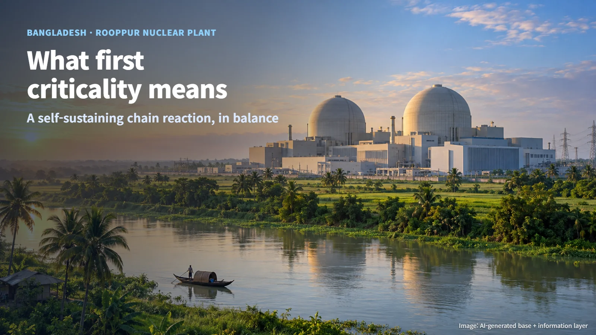
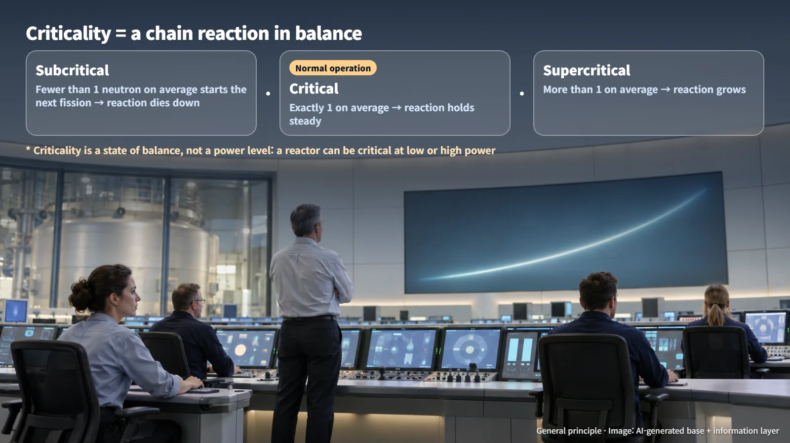
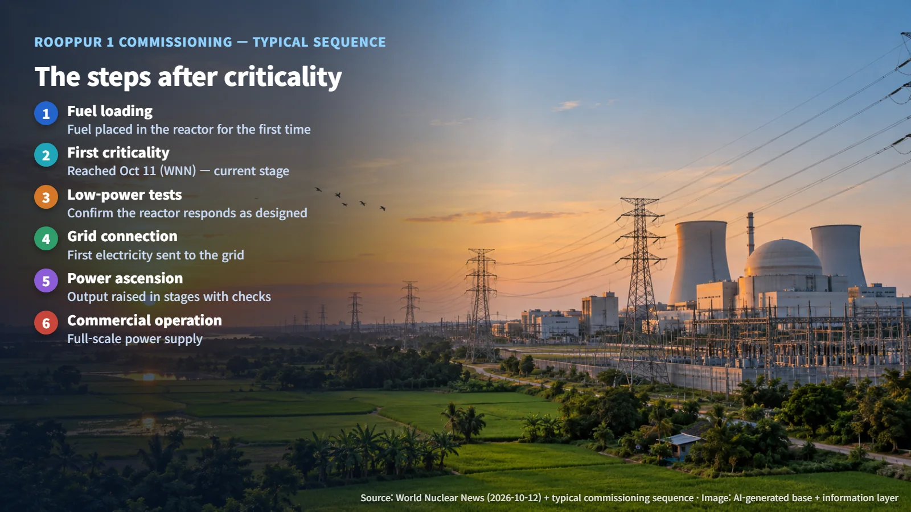

Bangladesh · Commissioning
Bangladesh's First Nuclear Reactor Reaches Criticality: What That Milestone Means
Rooppur Unit 1 has achieved its first self-sustaining chain reaction; low-power tests, grid connection and commercial operation are the next steps.
When a headline says a nuclear reactor has "gone critical," many readers pause. In everyday language, "critical" suggests a limit being reached or a situation turning dangerous. And because this is a country's very first nuclear plant, it is natural to wonder whether nuclear electricity is already flowing into homes there. In reactor physics the word has a precise and much calmer meaning, and the milestone sits at a specific point on a longer road. Let us walk through what the news tells us and which steps come next.

What "Criticality" Means: A State of Balance
When a uranium nucleus inside a reactor splits (nuclear fission), it releases heat along with a few small particles called neutrons. If one of those neutrons strikes another nucleus, that nucleus can split too. Reactions following one another in this way are called a chain reaction.
Criticality is the condition in which this chain reaction sustains itself at a steady level. On average, exactly one of the neutrons released by each fission goes on to cause the next fission. If fewer than one does, the reaction gradually dies down; if more than one does, it gradually grows.
A relay race is a helpful picture. When each runner hands the baton to exactly one next runner, the race carries on at the same pace. Operating a reactor means managing this baton-passing, using control rods and other means, so that it holds at the desired level. That is why a reactor in normal operation is always critical. Criticality is the basic condition of a reactor doing its job.

Criticality also describes a balance rather than an amount of power. A reactor can be critical at a very low power level, enough to light a single bulb, and equally critical at the high power level at which a plant produces its maximum output. For this reason, a new reactor usually confirms its first criticality at very low power and then raises its output step by step.
What Happened at Rooppur Unit 1
World Nuclear News (WNN) reported on October 12 that Unit 1 of Bangladesh's Rooppur nuclear power plant reached first criticality the day before, on October 11. The report cited the project's official announcement and comments from a Rosatom representative.
First criticality is the moment a newly built reactor achieves a self-sustaining chain reaction for the first time. After years of construction, the finished equipment and the loaded fuel begin, for the first time, to behave as a working reactor. According to the report, the start-up took place after the local regulator gave permission to proceed.
The Rooppur project is a nuclear power plant being built with Russian cooperation for the Bangladesh Atomic Energy Commission. Construction of Unit 1 began in 2017, and construction of Unit 2 began in 2018.
One point on sourcing: the criticality milestone is based on the WNN report. The regulator's original permit and the individual test records have not been reviewed directly here.
The Steps After Criticality: Power Tests, Grid Connection, Commercial Operation
So when will nuclear electricity reach homes in Bangladesh? That comes a few steps later. First criticality is an important milestone in commissioning, the process of actually running a new plant to confirm its performance and safety, and the plant now moves toward the stages that send power to the grid.
In general, a new nuclear plant reaches first criticality after fuel loading, when nuclear fuel is placed in the reactor for the first time, and then climbs a series of steps in order. It first runs low-power tests to confirm that the reactor responds as designed. Next, the generator is connected to the power grid and sends electricity for the first time (grid connection), and output is raised in stages while the equipment is checked. Once stable operation has been confirmed, the plant enters commercial operation. Every one of these steps comes with its own tests and checks.
The Rooppur project has said it plans to move on to the next power start-up and to connection with the Bangladesh grid once the required tests and safety checks are complete. The schedule for the next power start-up mentioned in the report is the project's target. The actual timing will be confirmed through test results and the regulator's subsequent decisions.

Reading Each Milestone in Its Place
When reading nuclear news, it helps to keep in mind that criticality, grid connection and commercial operation are separate stages. First criticality is the day a reactor first sustains its own chain reaction. Grid connection is the day it first sends electricity to the grid. Commercial operation is the day, after testing is complete, that it begins supplying electricity in earnest.
The accurate reading of this news is that the country's first reactor has crossed an important threshold in commissioning. The milestones to watch next are the test results, the regulator's further permissions, and an actual grid connection announcement.
Reading the stages one at a time guards against both hype and needless disappointment. If news of criticality is taken as the start of power supply, a long test period afterward can feel as though something has gone wrong. Treating planned schedules as targets and announced achievements as facts makes the same news far easier to read accurately.
The word "criticality" may sound tense, yet what it describes is a carefully tuned balance. As the moment when a country's first nuclear reactor found that balance for the first time, this news marks a milestone worth taking in calmly.